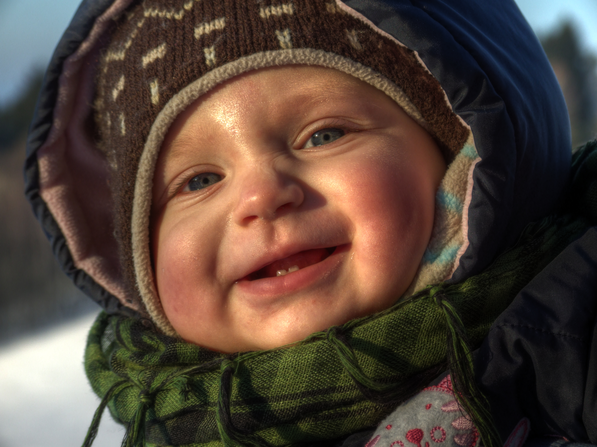
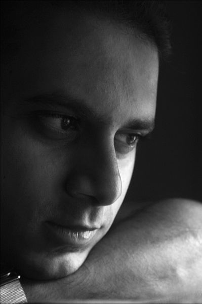
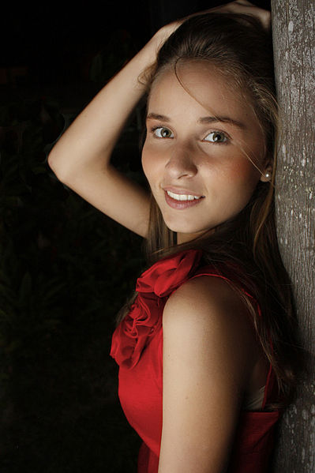
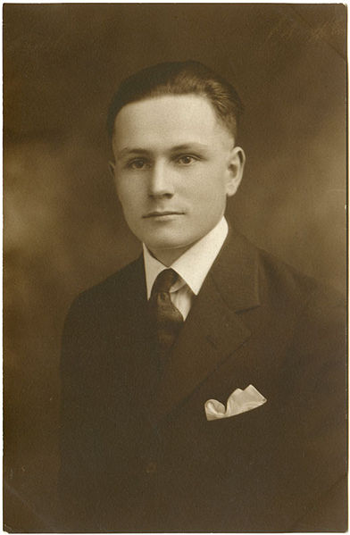
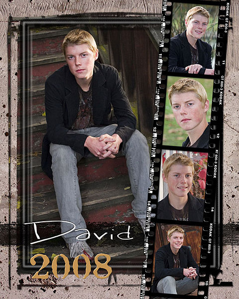

From Wikipedia, the free encyclopedia
Portrait photography or portraiture is photography of a person or group of people that displays the expression, personality, and mood of the subject. Like other types of portraiture, the focus of the photograph is usually the person's face, although the entire body and the background or context may be included.
Edward S. Curtis, self-portrait.
Portrait of a girl in costume in the natural environment of a gothic festival.
| Contents [hide] |
|---|
Portrait photographs have been made since virtually the invention of the camera. The relatively low cost of the daguerreotype in the middle of the 19th century and the reduced sitting time for the subject, though still much longer than now, led to a general rise in the popularity of portrait photography over painted portraiture. The style of these early works reflected the technical challenges associated with long exposure times and the painterly aesthetic of the time. Subjects were generally seated against plain backgrounds and lit with the soft light of an overhead window and whatever else could be reflected with mirrors. Advances in photographic equipment and techniques developed, and gave photographers the ability to capture images with shorter exposure times and the making of portraits outside the studio.
When portrait photographs are composed and captured in a studio, the photographer has control over the lighting of the composition of the subject and can adjust direction and intensity of light. There are many ways to light a subject's face, but there are several common lighting plans which are easy enough to describe.
Winter portrait of a 10-month old baby girl
One of the most basic lighting plans is called three-point lighting. This plan uses three (and sometimes four) lights to fully model (bring out details and the three-dimensionality of) the subject's features. The three main lights used in this light plan are as follows:
Also called a main light, the key light is usually placed to one side of the subject's face, between 30 and 60 degrees off center and a bit higher than eye level. The purpose of the Key-Light is to give shape (modelling) to a subject, typically a face. This relies on the first principle of lighting, white comes out of a plane and black goes back into a plane. The depth of shadow created by the Main-Light can be controlled with a Fill-Light.
In modern photography, the fill-light is used to control the contrast in the scene and is nearly always placed above the lens axis and is a large light source (think of the sky behind your head when taking a photograph). As the amount of light is less than the key-light (main-light), the fill acts by lifting the shadows only (particularly relevant in digital photography where the noise lives in the shadows). It is true to say that light bounces around a room and fills in the shadows but this does not mean that a fill-light should be placed opposite a key-light (main-light) and it does not soften shadows, it lifts them. The relative intensity (ratio) of the Key-light to the fill-light is most easily discussed in terms of "Stops" difference (where a Stop is a doubling or halving of the intensity of light). A 2 Stop reduction in intensity for the Fill-Light would be a typical start point to maintain dimensionality (modelling) in a portrait (head and shoulder) shot.
Accent-lights server the purpose of accentuating a subject. Typically an Accent-light will separate a subject from a background. Examples would be a light shining onto a subject's hair to add a rim effect or shining onto a background to lift the tones of a background. There can be many accent lights in a shot, another example would be a spotlight on a handbag in a fashion shot. When used for separation, i.e. a hair-light, the light should not be more dominant than the main light for general use. Think in terms of a "Kiss of moonlight", rather than a "Strike of lightning", although there are no "shoulds" in photography and it is up to the photographer to decide on the authorship of their shot.
A Kicker is a form of Accent-Light. Often used to give a backlit edge to a subject on the shadow side of the subject.
Butterfly lighting uses only two lights. The Key light is placed directly in front of the subject, often above the camera or slightly to one side, and a bit higher than is common for a three-point lighting plan. The second light is a rim light. Often a reflector is placed below the subject's face to provide fill light and soften shadows.
This lighting can be recognized by the strong light falling on the forehead, the bridge of the nose and the upper cheeks, and by the distinct shadow below the nose which often looks rather like a butterfly and thus provides the name for this lighting plan. Butterfly lighting was a favourite of famed Hollywood portraitist George Hurrell, which is why this style of lighting is often called Paramount lighting.
These lights can be added to basic lighting plans to provide additional highlights or add background definition.
Not so much a part of the portrait lighting plan, but rather designed to provide illumination for the background behind the subject, background lights can pick out details in the background, provide a halo effect by illuminating a portion of a backdrop behind the subject's head, or turn the background pure white by filling it with light.
Most lights used in modern photography are a flash of some sort. The lighting for portraiture is typically diffused by bouncing it from the inside of an umbrella, or by using a soft box. A soft box is a fabric box, encasing a photo strobe head, one side of which is made of translucent fabric. This provides a softer lighting for portrait work and is often considered more appealing than the harsh light often cast by open strobes. Hair and background lights are usually not diffused. It is more important to control light spillage to other areas of the subject. Snoots, barn doors and flags or gobos help focus the lights exactly where the photographer wants them. Background lights are sometimes used with color gels placed in front of the light to create coloured backgrounds.
_by_Don_English.png)
Butterfly lighting by director Josef von Sternberg is used to enhance Marlene Dietrich's features, in the iconic shot.[1] From Shanghai Express, Paramount 1932 Photo by Don English
Windows as a source of light for portraits have been used for decades before artificial sources of light were discovered. According to Arthur Hammond, amateur and professional photographers need only two things to light a portrait: a window and a reflector.[2] Although window light limits options in portrait photography compared to artificial lights it gives ample room for experimentation for amateur photographers. A white reflector placed to reflect light into the darker side of the subject's face, will even the contrast. Shutter speeds may be slower than normal, requiring the use of a tripod, but the lighting will be beautifully soft and rich.[3]
The best time to take window light portrait is considered to be early hours of the day and late hours of afternoon when light is more intense on the window. Curtains, reflectors, and intensity reducing shields are used to give soft light. While mirrors and glasses can be used for high key lighting. At times colored glasses, filters and reflecting objects can be used to give the portrait desired color effects. The composition of shadows and soft light gives window light portraits a distinct effect different from portraits made from artificial lights.
While using window light, the positioning of the camera can be changed to give the desired effects. Such as positioning the camera behind the subject can produce a silhouette of the individual while being adjacent to the subject give a combination of shadows and soft light. And facing the subject from the same point of light source will produce high key effects with least shadows.
Window light used to create soft light to the portrait
There are many different techniques for portrait photography. Often it is desirable to capture the subject's eyes and face in sharp focus while allowing other less important elements to be rendered in a soft focus. At other times, portraits of individual features might be the focus of a composition such as the hands, eyes or part of the subject's torso.
Additionally another style such as head shot has came out of the portraiture technique and had become a style on its own.
There are essentially four approaches that can be taken in photographic portraiture — the constructionist, environmental, candid and creative approaches. Each approach has been used over time for different reasons be they technical, artistic or cultural. The constructionist approach is when the photographer in their portraiture constructs an idea around the portrait — happy family, romantic couple, trustworthy executive. It is the approach used in most studio and social photography. It is also used extensively in advertising and marketing when an idea has to be put across. The environmental approach depicts the subject in their environment be that a work, leisure, social or family one. They are often shown as doing something, a teacher in a classroom, an artist in a studio, a child in a playground. With the environmental approach more is revealed about the subject.
Environmental pictures can have good historical and social significance as primary sources of information. The candid approach is where people are photographed without their knowledge going about their daily business. Whilst this approach taken by the paparazzi is criticized and frowned upon for obvious reasons, less invasive and exploitative candid photography has given the world superb and important images of people in various situations and places over the last century. The images of Parisians by Doisneau and Cartier-Bresson to name but two, demonstrate this. As with environmental photography, candid photography is important as a historical source of information about people. The Creative Approach is where digital manipulation (and formerly darkroom manipulation) is brought to bear to produce wonderful pictures of people. It is becoming a major form of portraiture as these techniques become more widely understood and used.
Lenses used in portrait photography are classically fast, medium telephoto lenses, though any lens may be used, depending on artistic purposes. See Canon EF Portrait Lenses for Canon lenses in this style; other manufacturers feature similar ranges. The first dedicated portrait lens was the Petzval lens developed in 1840 by . It had a relatively narrow field of view of 30 degrees, a focal length of 150mm, and a fast f-number in the f/3.3-3.7 range.
Classic focal length is in the range 80–135mm on 135 film format and about 150-400mm on large format, which historically is first in photography. Such a field of view provides a flattening perspective distortion when the subject is framed to include their head and shoulders. Wider angle lenses (shorter focal length) require that the portrait be taken from closer (for an equivalent field size), and the resulting perspective distortion yields a relatively larger nose and smaller ears, which is considered unflattering and imp-like. Wide-angle lenses – or even fisheye lenses – may be used for artistic effect, especially to produce a grotesque image. Conversely, longer focal lengths yield greater flattening because they are used from further away. This makes communication difficult and reduces rapport. They may be used, however, particularly in fashion photography, but longer lengths require a loudspeaker or walkie-talkie to communicate with the model or assistants.[4] In this range, the difference in perspective distortion between 85mm and 135mm is rather subtle; see (Castleman 2007) for examples and analysis.
Speed-wise, fast lenses (wide aperture) are preferred, as these allow shallow depth of field (blurring the background), which helps isolate the subject from the background and focus attention on them. This is particularly useful in the field, where one does not have a back drop behind the subject, and the background may be distracting. The details of bokeh in the resulting blur are accordingly also a consideration; some lenses, in particular the "DC" (Defocus Control) types by Nikon, are designed to give the photographer control over this aspect, by providing an additional ring acting only on the quality of the bokeh, without influencing the foreground (hence, these are not soft-focus lenses). However, extremely wide apertures are less frequently used, because they have a very shallow depth of field and thus the subject's face will not be completely in focus.[5] Thus, f/1.8 or f/2 is usually the maximum aperture used; f/1.2 or f/1.4 may be used, but the resulting defocus may be considered a special effect – the eyes will be sharp, but the ears and nose will be soft.
Conversely, in environmental portraits, where the subject is shown in their environment, rather than isolated from it, background blur is less desirable and may be undesirable, and wider angle lenses may be used to show more context.[6]
Finally, soft focus (spherical aberration) is sometimes a desired effect, particularly in glamour photography where the "gauzy" look may be considered flattering. The Canon EF 135mm f/2.8 with Softfocus is an example of a lens designed with a controllable amount of soft focus.
Most often a prime lens will be used, both because the zoom is not necessary for posed shots (and primes are lighter, cheaper, faster, and higher quality), and because zoom lenses can introduce highly unflattering geometric distortion (barrel distortion or pincushion distortion). However, zoom lenses may be used, particularly in candid shots or to encourage creative framing.[7]
Portrait lenses are often relatively inexpensive, because they can be built simply, and are close to the normal range. The cheapest portrait lenses are normal lenses (50mm), used on a cropped sensor. For example, the Canon EF 50mm f/1.8 II is the least expensive Canon lens, but when used on a 1.6× cropped sensor yields an 80mm equivalent focal length, which is at the wide end of portrait lenses.
Portrait taken with an 18mm wide-angle lens with an aperture of ƒ/4.5, resulting in fairly large depth of field
The documentary I Am Chicago was an experiment in mobile full-body portraiture, using natural light and a moving truck as a studio.
In North America, senior portraits are formal portraits taken of students at the beginning of their senior year of high school.
Formal senior portraits, in and of themselves, date back at least to the 1880s in America. Some traditional senior portrait sittings include a cap and gown and other changes of clothing, portrait styles and poses. In recent decades, the convention has been to feature male students in tuxedo jackets and female students in a silk or fur drape and a pearl necklace which is meant to simulate the appearance of a formal gown.[citation needed]
In some schools a portrait studio is invited to the school to ensure all senior portraits (for the yearbook) are similar in pose and style, and so that students who cannot afford to purchase these portraits on their own or choose not to purchase portraits will appear in the yearbook the same as other students. Other schools allow students to choose a studio and submit portraits on their own.
Senior portrait c. 1920
Modern senior portraits may include virtually any pose or clothing choice, within the limits of good taste. Students often appear with pets, student athletes of both sexes pose in letterman jackets or their playing uniforms, while many men choose glamour photography. Outdoor "location" photos continue to increase in popularity, replacing studio portraits. Picture proofs are usually available to view online the next day which are lower quality, unedited and often with a watermark of the studio.
A contemporary photo montage type senior portrait, personalized with name of student and year of graduation.
Senior portraits are often included in graduation announcements or are given to friends and family. They are also used in yearbooks and are usually rendered larger than their underclassmen counterparts and are often featured in color, even if the rest of the yearbook is mostly reproduced in black and white. In some schools the requirements are strict regarding the choice of photographer or in the style of portraiture, with only traditional-style portraits being acceptable. Many schools choose to contract one photographer for their yearbook portraits, while other schools allow many different photographers to submit yearbook portraits.
Many parents[who?] choose to frame a large print of their child's senior portrait for display in their home. One popular way of displaying the senior portrait is in a special photo mat cut to display small copies of the student's school photos from kindergarten to their junior year, displayed in a circle (like the numbers of a clock) surrounding a larger opening for the senior portrait.
Portrait photographers at the Open Directory Project
| v t e | Photography | [hide] |
|---|
| Categories |